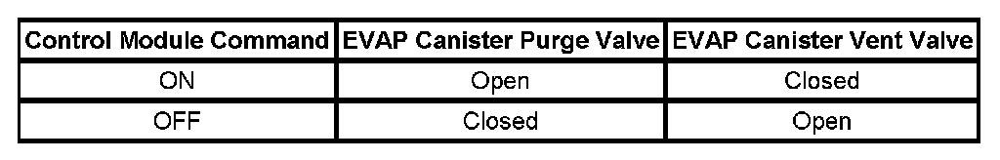

P0455
DTC P0455
DIAGNOSTIC INSTRUCTIONS
- Perform the Diagnostic System Check - Vehicle prior to using this diagnostic procedure. Initial Inspection and Diagnostic Overview
- Strategy Based Diagnosis for an overview of the diagnostic approach.
- Diagnostic Procedure Instructions provide an overview of each diagnostic category.
DTC DESCRIPTOR
DTC P0455
Evaporative Emission (EVAP) System Large Leak Detected
CIRCUIT/SYSTEM DESCRIPTION

The control module tests the Evaporative Emission (EVAP) System for a large leak or restrictions to the purge path in the EVAP system. When the enabling criteria has been met the control module commands the EVAP vent solenoid valve ON and the EVAP purge solenoid valve ON, allowing vacuum into the EVAP system. The control module monitors the fuel tank pressure (FTP) sensor voltage to verify that the system is able to reach a predetermined level of vacuum within a set amount of time. The table illustrates the relationship between the ON and OFF states, and the Open or Closed states of the EVAP canister purge and vent valves.
CONDITIONS FOR RUNNING THE DTC
- Before the PCM can report DTC P0455 failed, DTC P0496 must run and pass.
- DTCs P0106, P0107, P0108, P0116, P0117, P0118, P0120, P0121, P0122, P0123, P0220, P0222, P0223, P0442, P0443, P0449, P0451, P0452, P0453, P0454, P0464, P0496, P0608, P0609, P0641, P0651, P1516, P2101, P2119, P2120, P2122, P2123, P2125, P2127, P2128, P2135, P2138 are not set.
- The ignition voltage is between 11-18 volts.
- The barometric pressure (BARO) is more than 74 kPa.
- The fuel level is between 15-85 percent.
- The engine coolant temperature (ECT) is less than 35°C (95°F).
- The intake air temperature (IAT) is between 4-30°C (39-86°F).
- DTC P0455 runs once per cold start when the above conditions are met.
CONDITIONS FOR SETTING THE DTC
The EVAP system is not able to achieve or maintain a calibrated level of vacuum within a set amount of time.
ACTION TAKEN WHEN THE DTC SETS
DTC P0455 is a Type B DTC.
CONDITIONS FOR CLEARING THE MIL/DTC
DTC P0455 is a Type B DTC.
DIAGNOSTIC AIDS
- A fuel fill cap that is left OFF after a fuel fill will cause this DTC to set.
- A loose, missing, or damaged fuel fill cap can cause this DTC to set.
- A blockage or restriction in the EVAP purge solenoid, purge pipe EVAP canister, or vapor pipe, can cause this DTC to set.
- A temporary blockage in the EVAP purge solenoid, purge pipe, or EVAP canister could cause an intermittent condition. Inspect and repair any restriction in the EVAP system.
- To help locate intermittent leaks, use the J 41413-200 Evaporative Emissions System Tester (EEST) to introduce smoke into the EVAP system. Move all EVAP components while observing smoke with the J 41413-SPT High Intensity White Light.
- To improve the visibility of the smoke exiting the EVAP system, observe the suspected leak area from different angles with the J 41413-SPT.
- Observe the Freeze Frame/Failure Records vehicle mileage since the diagnostic test last failed may help determine how often the condition occurs that caused the DTC to set. This may assist in diagnosing the condition.
CIRCUIT/SYSTEM TESTING
IMPORTANT:
- Larger volume fuel tanks and/or those with lower fuel levels may require several minutes for the floating indicator to stabilize.
- Refer to the J 41413-200 operation manual for detailed instructions.
1. Connect the J 41413-200 to the vehicle EVAP service port. For vehicles without a service port, disconnect the purge tube at the quick connector on the EVAP canister side of the purge solenoid valve and install the CH-48096.
2. Seal the EVAP system and use the flow meter on the J 41413-200 calibrated to 0.51 mm (0.02 in) to determine that there is no leak in the EVAP system.
- If a leak is detected, use the J 41413-200 to apply smoke to the EVAP system at the service port until the leak is located.
3. To test for a restriction, connect the J 41413-200 nitrogen/smoke hose to the J 41413-311 brass cone adapter. Disconnect the hose at the fuel cap end of the GE-41415-50. Connect the J 41413-311 to the disconnected hose on the GE-41415-50. Install the GE-41415-50 filler neck end only to the vehicle.
4. Allow the engine to idle.
5. Use the Purge/Seal function to seal the system with a scan tool.
6. Command the EVAP canister purge solenoid valve to 30 percent.
7. The vacuum/pressure gage on the J 41413-200 and the FTP parameter on the scan tool should both show vacuum.
- If the vacuum/pressure gage shows vacuum, but the FTP parameter does not show vacuum, replace the FTP sensor.
- If neither the FTP parameter nor the vacuum/pressure gage shows vacuum, repair the restriction in the purge path. Refer to Evaporative Emissions Hose Routing Diagram.
8. Verify that the vacuum increases to the abort limit on the scan tool or more than 3.2 volts, and the value is closely similar between the scan tool and the vacuum/pressure gage on the J 41413-200.
- If the values are not similar or the voltage did not reach 3.2 volts, replace the FTP sensor.
REPAIR INSTRUCTIONS
Perform the Diagnostic Repair Verification after completing the diagnostic procedure.
- Fuel Tank Pressure Sensor Replacement (1500 LWB - 117.3L (31 gal) Tank + E85) Fuel Tank Pressure Sensor Replacement (1500 SWB - 98.4L (26 gal) Tank + E85) Fuel Tank Pressure Sensor Replacement (1500 Series) Fuel Tank Pressure Sensor Replacement (2500 Series)
- Evaporative Emission Canister Purge Solenoid Valve Replacement
- Evaporative Emission Canister Vent Solenoid Valve Replacement (1500 Series) Evaporative Emission Canister Vent Solenoid Valve Replacement (2500 Series)
- Evaporative Emission Canister Replacement (1500 Series) Evaporative Emission Canister Replacement (2500 Series)
- Evaporative Emission System Hoses/Pipes Replacement (2500 LWB - 98.4L (26 gal) Tank-Front) Evaporative Emission System Hoses/Pipes Replacement (2500 LWB - Intermediate) Verification Tests